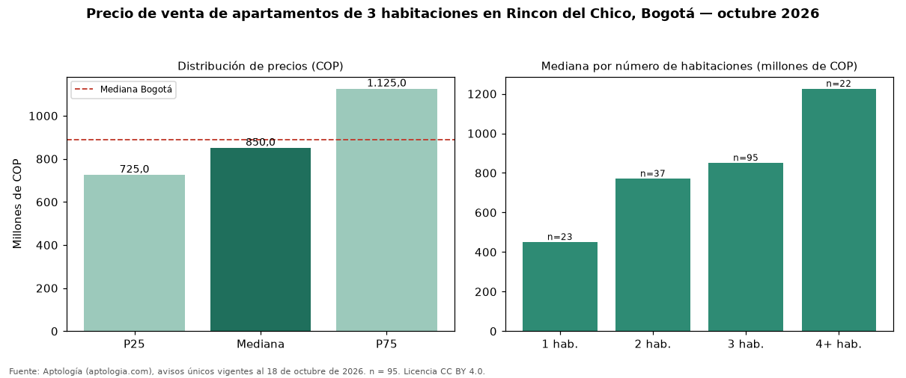

Precio de venta de apartamentos de 3 habitaciones en Rincon del Chico, Bogotá — octubre 2026
En Rincon del Chico, Bogotá, la mediana de precio de venta de apartamentos de 3 habitaciones es COP 850 millones, según 95 avisos únicos vigentes. La mediana prácticamente coincide con la de Bogotá (COP 890 millones; diferencia de -4,5 %). En el mismo barrio, la mediana de apartamentos es COP 450 millones con 1 habitación, COP 770 millones con 2 habitaciones, COP 1,23 mil millones con 4 o más habitaciones. 100 % de los avisos incluye al menos un parqueadero. El estrato más frecuente en los avisos es 6. Por metro cuadrado, la mediana es COP 6.818.182/m² (−3 % frente a COP 7.000.000/m² en Bogotá). El rango intercuartílico va de COP 725 millones a COP 1,12 mil millones (razón 1,6), una dispersión moderada. Datos abiertos CC BY 4.0 de Aptología; fuente y búsqueda de inmuebles: https://www.aptologia.com/venta/bogota/rincon-del-chico. Archivos: PDF de 2 páginas, CSV con las cifras y gráfica PNG.

| Avisos únicos | 95 |
|---|---|
| Percentil 25 | COP 725.000.000 |
| Mediana | COP 850.000.000 |
| Percentil 75 | COP 1.125.000.000 |
| Mediana por m² | COP 6.818.181 |
Fuente: avisos vigentes de portales inmobiliarios recopilados por Aptología, deduplicados (mínimo 30 avisos únicos por celda). Precios pedidos, no cerrados. Fecha: 2026-10-18.